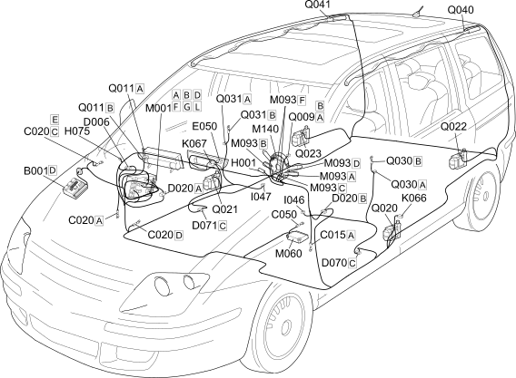

E7030 AIR BAG COMPONENTS LOCATION
- Path
- Electrical equipment > 1 ELECTRICAL FUNCTIONS > E70 VEHICLE ELECTRONIC SYSTEMS > E7030 AIRBAG > E7030 AIR BAG COMPONENTS LOCATION
- Kind
- topic
- Applies to
- engines: 2.0 16V JTD, 2.2 16V JTD; all production periods; only with equipment: MY 2005
- Interactive page
- https://sloeber94.github.io/elrnDB-fUlss/en/#/179009481
Applies to: engines: 2.0 16V JTD, 2.2 16V JTD; all production periods; only with equipment: MY 2005

Component code | Description | Reference to the assembly |
|---|---|---|
ENGINE COMPARTMENT JUNCTION UNIT | ||
DRIVER'S DASHBOARD EARTH | - | |
PASSENGER SIDE DASHBOARD EARTH | - | |
AIR BAG SYSTEM EARTH | - | |
DASHBOARD/REAR COUPLING | - | |
DRIVER'S SEAT COUPLING | - | |
PASSENGER SEAT COUPLING | - | |
INSTRUMENT PANEL | ||
Ignition switch | Op. 5,520A IGNITION SWITCH | |
PASSENGER AIR BAG DISABLING SWITCH | ||
DRIVER'S SEAT BELT SWITCH | - | |
PASSENGER SEAT BELT SWITCH | - | |
SENSOR FOR DRIVER'S SIDE BAG | ||
SENSOR FOR PASSENGER SIDE BAG | ||
BODY COMPUTER | ||
AIR BAG CONTROL UNIT | ||
STEERING WHEEL NODE CONTROL UNIT (NVO) | ||
WARNING LIGHTS AND MILOMETER CONTROL UNIT (NSO) | - | |
DRIVER'S AIR BAG | ||
AIR BAG IN DASHBOARD (PASSENGER SIDE) | ||
DRIVER'S SIDE FRONT BELT PRETENSIONER | ||
PASSENGER SIDE FRONT BELT PRETENSIONER | ||
DRIVER'S SIDE REAR SEAT BELT PRETENSIONER | ||
PASSENGER SIDE REAR SEAT BELT PRETENSIONER | ||
DRIVER'S SIDEBAG | ||
PASSENGER SIDEBAG | ||
DRIVER'S HEAD BAG | - | |
PASSENGER HEAD BAG | - |
Topics linked from this page (34)
- 5505A MULTI-FUNCTION COMPONENTS
- 5550A STALK UNIT
- 5560B ANALOGUE CONTROL PANEL
- 5580C AIR BAG SYSTEM
- 7065A FRONT SAFETY BELTS
- 7065B REAR SAFETY BELTS
- B001 ENGINE COMPARTMENT JUNCTION UNIT
- C015 DRIVER'S DASHBOARD EARTH
- C020 PASSENGER SIDE DASHBOARD EARTH
- C050 AIR BAG SYSTEM EARTH
- D020 DASHBOARD/REAR COUPLING
- D070 DRIVER'S SEAT COUPLING
- D071 PASSENGER SEAT COUPLING
- E050 INSTRUMENT PANEL
- H001 Ignition switch
- H075 PASSENGER AIR BAG DISABLING SWITCH
- I046 DRIVER'S SEAT BELT SWITCH
- I047 PASSENGER SEAT BELT SWITCH
- K066 SENSOR FOR DRIVER'S SIDE BAG
- K067 SENSOR FOR PASSENGER SIDE BAG
- M001 BODY COMPUTER
- M060 AIR BAG CONTROL UNIT
- M093 STEERING WHEEL NODE CONTROL UNIT (NVO)
- M140 WARNING LIGHTS AND MILOMETER CONTROL UNIT (NSO)
- Q009 DRIVER'S AIR BAG
- Q011 AIR BAG IN DASHBOARD (PASSENGER SIDE)
- Q020 DRIVER'S SIDE FRONT BELT PRETENSIONER
- Q021 PASSENGER SIDE FRONT BELT PRETENSIONER
- Q022 DRIVER'S SIDE REAR SEAT BELT PRETENSIONER
- Q023 PASSENGER SIDE REAR SEAT BELT PRETENSIONER
- Q030 DRIVER'S SIDEBAG
- Q031 PASSENGER SIDEBAG
- Q040 DRIVER'S HEAD BAG
- Q041 PASSENGER HEAD BAG